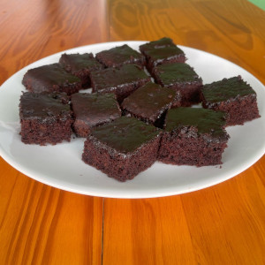
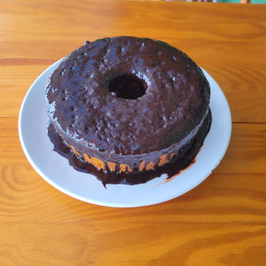

Bolo de Chocolate
Sem dúvida o preferido das crianças. Sua textura úmida e cor vibrante fazem dele um dos sabores mais pedidos pelos nossos clientes!
PASSE O MOUSE EM CADA IMAGEM!

Bolo de Cenoura
Idel para um lanche da tarde, o match entre a cobertura de chocolate e a massa de cenoura fazem dele um dos mais saborosos e elogiados!